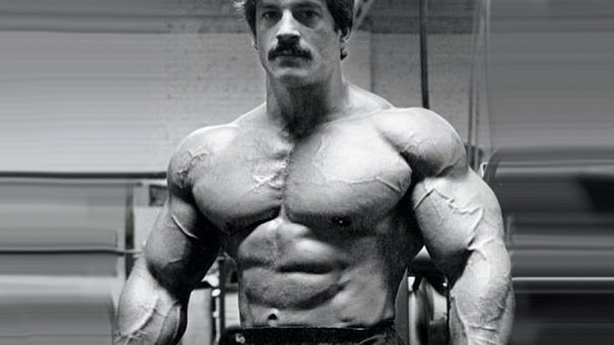

Mike Mentzer's Life
Mentzer started bodybuilding when he was 11 years old at a body weight of 95 lb (43 kg) after seeing the men on the covers of several muscle magazines. His father had bought him a set of weights and an instruction booklet. The booklet suggested that he
train no more than three days a week, so Mike did just that. By age 15, his body weight had reached 165 lb (75 kg), at which Mike could bench press 370 lb (170 kg). Mike's goal at the time was to look like his bodybuilding hero, Bill Pearl. After
graduating high school, Mentzer served four years in the United States Air Force. It was during this time he started
working
out over three hours a day, six days a week.
Professional BodyBuilding
In late 1979, Mentzer won the heavyweight class of the Mr. Olympia, again with a perfect 300 score, but he lost in the overall to Frank Zane (who was awarded his third title) that year. In the 1980 Mr. Olympia he placed fourth in a tie with Boyer Coe
behind Arnold Schwarzenegger, Chris Dickerson, and Frank Zane. Diet has always been as important, if not more, than weight-training for bodybuilders. However, in his book Heavy Duty Nutrition, Mentzer demonstrated that nutrition for athletes did not
need to be nearly as extreme as the bodybuilding industry would lead one to believe. His recommended diets were well balanced, and he espoused eating from all four food groups, totaling four servings each of high-quality grains and fruits, and two
each of dairy and protein daily, all year-round.[10] Mentzer believed that carbohydrates should make up the bulk of the caloric intake, 60%, rather than protein as others preferred. Mentzer's reasoning was simple: to build 10 pounds of muscle in a
year, a total of 6000 extra calories needed to be ingested throughout the year, because one pound of muscle contains 600 calories. That averages 16 extra calories per day, and only four of them needed to be from protein—because muscle is 22% protein,
about one quarter.

Súlyzók és edzőgépek
Testépítés